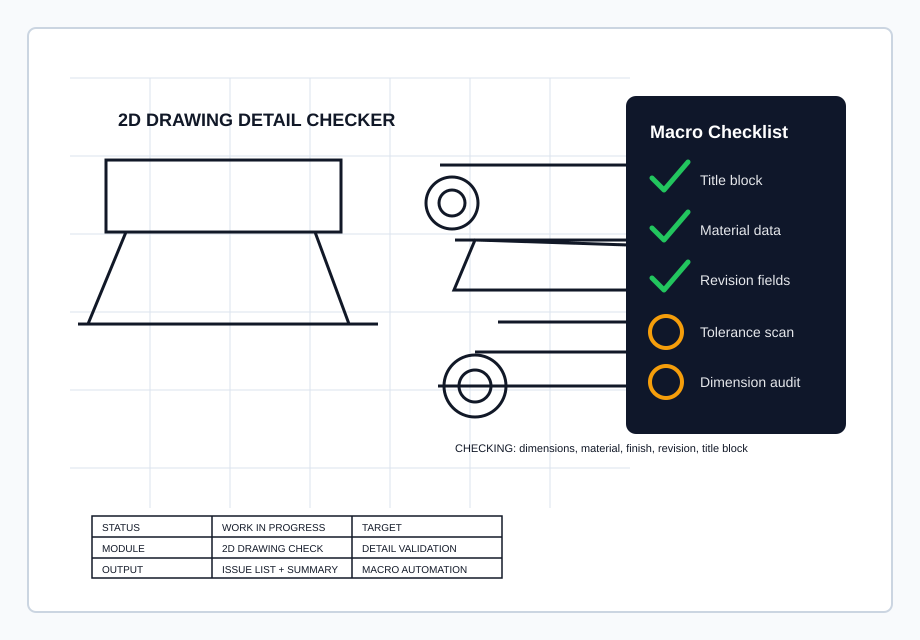
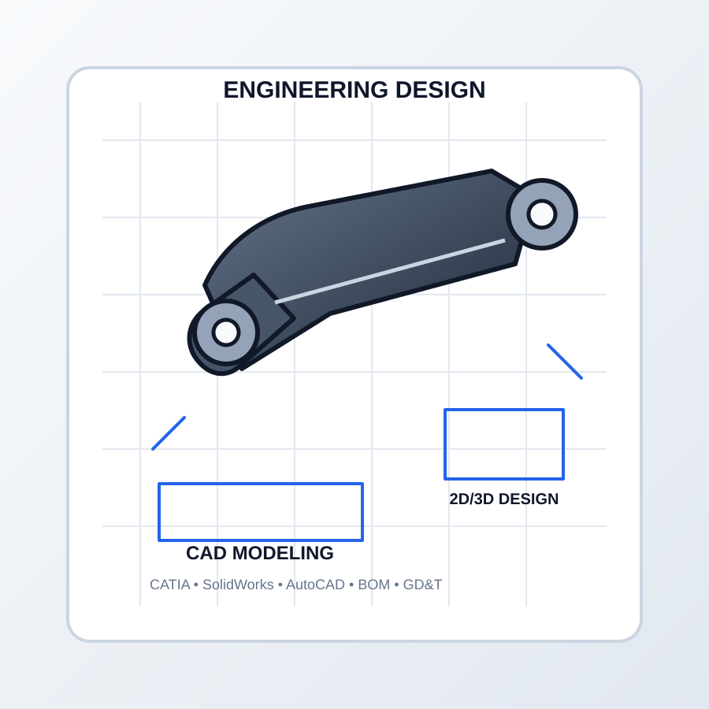

2D Drawing Checker Macro
Work in progress tool for checking drawing details, title block fields, dimensions, and revision data.
Work in progress.png)

CAD modeling, mechanical assemblies, drawing review, BOM, and technical documentation.
Click to view project
Excel macro workflow for cleaning data and speeding up reports.
Click to view project
Work in progress tool for checking drawing details, title block fields, dimensions, and revision data.
Work in progressMitsuba Philippines • July 2024 - Present
Click to view work details